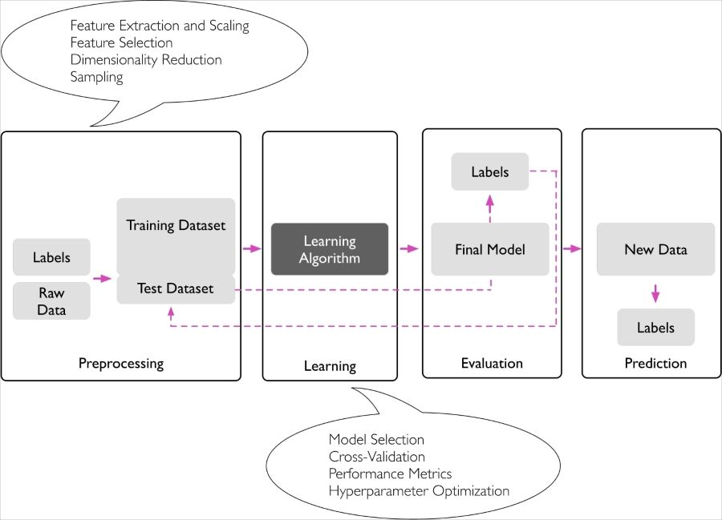
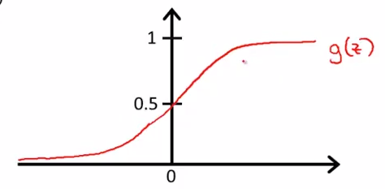

Machine Learning
Table of Contents
1 Definition
A computer program is said to learn from experience E with respect to some task T and some performance measure P, if its performance on T, as measured by P, impoves with experience E – Tom Mitchell(1998)
2 Roadmap

3 Supervised
Teach the computer how to do something
- "right answers" given
3.1 Regression problem
predict continuous valued output
3.1.1 Linear Regression
Hypothesis
\[h_\theta(x_0, x_1, \dots)=\theta_0 x_0 + \theta_1 x_1 + \theta_2 x_2 + \cdots + \theta_n x_n (x_0 = 1)\]
Cost Function
Called Squared error function or Mean squared error \[J(\theta_0, \theta_1)=\frac{1}{2m}\sum_{i=1}^m(\hat{y^i}-y^i)^2=\frac{1}{2m}\sum_{i=1}^m(h_\theta(x^i)-y^i)^2\]
- Goal: minimize \(J(\theta_0, \theta_1)\)
- \(\frac{1}{2}\) is a convenience for the computation of the gradient descent,
as the derivative term of the square function will cancel out the \(\frac{1}{2}\) term.
3.1.2 Polynomial Regression
- Let \(x_1=x, x_2=x^2\) \[h_\theta(x)=\theta_0+\theta_1 x_1+\theta_2 x_2\]
- need to use feature scaling
3.1.3 Gradient Descent
To find the minimum value of the cost function.
- Start with some parameters \(\theta_0, \theta_1, \dots\)
- Keep changing parameters to reduce \(J(\theta_0, \theta_1, \dots)\)
idea
repeat until convergence \[\theta_j=\theta_j-\alpha\frac{d}{d\theta_j}J(\theta_0, \theta_1, \dots)\]
- \(\alpha\) too smaller: gradient descent can be slow
- \(\alpha\) too large: gradient descent can overshoot the minimum
- Solve equation: \[\theta_0 = \theta_0-\alpha\frac{1}{m}\sum_{i=1}^m(h_\theta(x^i)-y^i)\] \[\theta_1 = \theta_1-\alpha\frac{1}{m}\sum_{i=1}^m((h_\theta(x^i)-y^i)x^i)\]
Batch Gradient Descent
Each step of gradient descent uses all the training examples.
Other Method to find min value of the cost function
Normal Equations Method
- Gradient Descent scales better to large data sets
Feature Scaling
- mean normalization \[\frac{x_i - \mu}{range}\] range could be replaced with std
Learning Rate
- Debugging gradient descent: Plot cost function with number of iterations on the x-axis
- Automatic convergence test: Declare convergence if \(J(θ)\) decreases by less than \(E\)(some small value, e.g. \(10^{-3}\)) in one iteration
3.1.4 Normal Equation
Minimize J by taking its derivatives with respect to \(\theta_j\), and set them to zero. \[\theta=(X^T X)^{-1}X^T y\]
vs Gradient Descent
| Gradient Descent | Normal Equation |
|---|---|
| Need to choose \(\alpha\) | No need to choose \(\alpha\) |
| Needs many iterations | No need to iterate |
| \(O(k n^2)\) | \(O(n^3)\) to calculate \((X^T X)^{-1}\) |
| Works well when n is large | Slow if \(n\) is large. \(n > 10000\) |
\((X^T X)^{-1}\) is noninvertible
- Redundant features (they are linearly dependent)
- Too many features \(m\le n\), In this case, delete some features or use regularization
3.2 Classification problem
predict discrete valued output
3.2.1 Logistic Regression
Hypothesis
- Logistic(Sigmoid) function
\[h_\theta(x)=g(\theta^T x)\] where \[g(z)=\frac{1}{1+e^{-z}}\]

combine together: \[h_\theta(x)=\frac{1}{1+e^{-\theta^T x}}\]
- \(y=1\) if \(g(z)\ge 0.5\) -> \(z\ge 0\)
- \(y=0\) if \(g(z) < 0.5\) -> \(z < 0\)
Cost Function
\[Cost(h_\theta(x), y)= \begin{cases} -\log(h_\theta(x)), & \mbox{if }y=1 \\ -\log(1-h_\theta(x)), & \mbox{if }y=0 \end{cases}\]
4 Unsupervised
Let computer learn by itself
4.1 Clustering problem
4.1.1 Examples
- Social network analysis
- Market segmentation(categorize customers)
- Astronomical data analysis